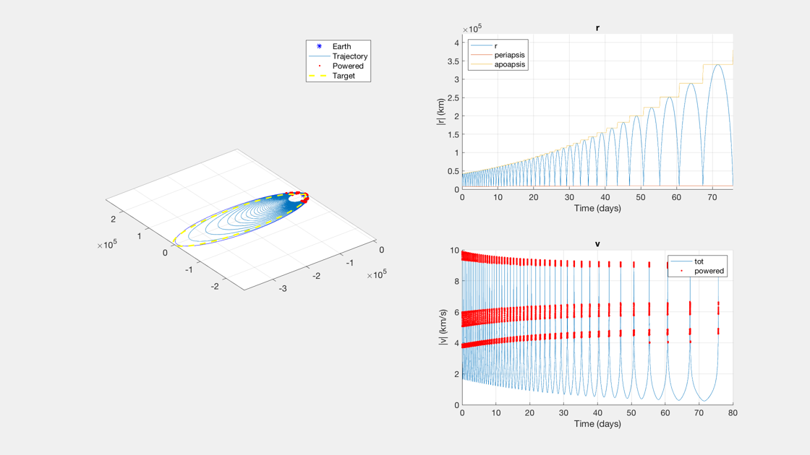

Contents
Find minimum low-thrust time to a lunar transfer orbit
This is an eccentric-to-eccentric transfer with burns only at periapsis. Assumes constant Isp starting from an initial specified acceleration.
If a guess for the minimum time is not known, an estimation is made from the optimal burn DV an acceleration. If a time from a higher acceleration is known, simply multiply by the acceleration reduction.
For minimum DV and time for a given acceleration, use true anomaly (no intermittency) and pi for the perigee arc (0.5). Set useNuDuration to true. For a Hohmnan-like transfer, set the arc small (fraction of 0.1)
A tighter burn policy - shorter arcs or time windows - produces lower DVs and higher trip times.
A LEO to LTO orbit demonstrator. Takes a minute. 5e-6, ap = pi: tMin ~ 6.6607e+06, dV ~ 0.81075 km/s 5e-6, ap = 0.3, 1000/2000: tMin ~ 3.6488e+07, dV ~ 1.33974 km/s
1e-5, ap = [6000 12000], 1000/2000: tMin ~ 4.7933e+06, DV = 0.975815 km/s 5e-6, ap = [6000 12000], 1000/2000: tMin ~ 9.1924e+06, dV ~ 0.978021 km/s 1e-6, ap = [6000 12000], 1000/2000: tMin ~ 4.5937e+07, dV ~ 0.976487 km/s 5e-6, ap = [12000], 1000/2000: tMin ~ 8.21643e+06, dV ~ 1.10824 km/s 1e-6, ap = [12000], 1000/2000: tMin ~ 3.9123e+07, dV ~ 1.10405 km/s 5e-6, ap = [18000], 1000/2000: tMin ~ 5.934e+06, dV ~ 1.27308 km/s 1e-6, ap = [18000], 1000/2000: tMin ~ 2.967e+07, dV ~ 1.274 km/s
NOTE: duration increases *linearly* with accel for fixed time(s); DV stays the same
See also: IntegrateBurnPolicyContinuous, AccelFromPolicyContinuous, PlotTrajectoryContinuous, PlotDiagnosticContinuous
%-------------------------------------------------------------------------- % Copyright (c) 2019 Princeton Satellite Systems, Inc. % All rights reserved. %-------------------------------------------------------------------------- dSim = IntegrateBurnPolicyContinuous; % Simulation data struct dAccel = AccelFromPolicyContinuous; % Acceleration data struct % tGuess from a prior run with a different acceleration? tGuess = []; % apses policy - can be an array or a scalar. Choose one of: apBurns = [2.5 3.5]; % burn units apFrac = 0.5; % fraction of orbit useTime = true; % use burn time, not anomaly % Spacecraft parameters dAccel.aMag = 5e-6; % Accel. km/s/s dAccel.Isp = 600; % Isp, seconds % these can be empty for time-controlled unbroken burns dAccel.tBurnMax = 1000; % Intermittency control: How long can the thruster fire at a time? dAccel.tWaitMin = 2000; % Intermittency control: How long between thruster firings?
End user params and start of calculations
% Initial and final orbits initialRadius = 7000; GEORadius = 42164; moonOrbRad = 385e3; GTOSMA = (initialRadius + GEORadius)/2; GTOEccentricity = (GEORadius - initialRadius) / 2 / GTOSMA; LTOSMA = (initialRadius + moonOrbRad)/2; LTOEccentricity = (moonOrbRad - initialRadius) / 2 / LTOSMA; dSim.el0 = [GTOSMA 0 0 0 GTOEccentricity 0]; dSim.el1 = [LTOSMA 0 0 0 LTOEccentricity 0]; dAccel.el1 = dSim.el1; % analytical optimal DV - for estimating time dvOpt = DVHohE( GTOEccentricity, GTOSMA, LTOEccentricity, LTOSMA ); % Are we using arcs or times? dAccel.useNuDuration = ~useTime; % apoapsis correction policy, at periapsis. if dAccel.useNuDuration arcFrac = apFrac; dAccel.ap = arcFrac*2*pi; else dAccel.ap = apBurns; end % Other burns dAccel.per = [0]; % Periapsis correction, at apoapsis. Turns on after some time. dAccel.inc1 = [0]; % Plane correction at node 1 dAccel.inc2 = [0]; % Plane correction at node 2 dAccel.tolEcc = 1; % not controlling eccentricity (per is zero)
Call the transfer time search function
[tMax,out] = TransferTimeSearch( dSim, dAccel, tGuess ); nRevs = NRevsContinuous( out.x ); fprintf('New tMax, %g days (%g s), in %d steps\n',tMax/86400,tMax,sum(out.steps)) fprintf('\tDuration, %g days (%g revolutions)\n',out.t(end)/86400,nRevs) fprintf('\tDelta-V via the integrator is %g km/s. \n',out.x(7,end)); %NewFig('DV and Time Results') %plot(tEs,dVs,'*')
New tMax, 77.6545 days (6.70935e+06 s), in 8 steps Duration, 75.7358 days (47.0581 revolutions) Delta-V via the integrator is 1.1574 km/s.
Plot
PlotTrajectoryContinuous(out.x,out.t,dSim.el1);
%--------------------------------------
